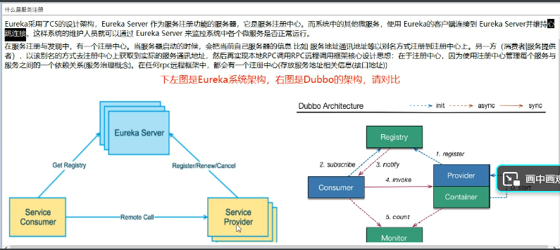
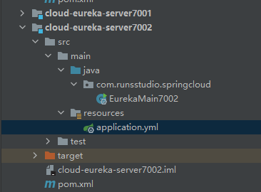
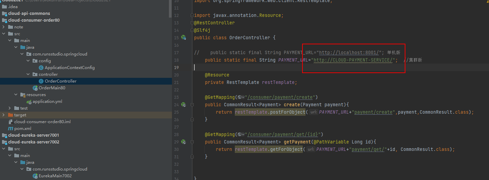
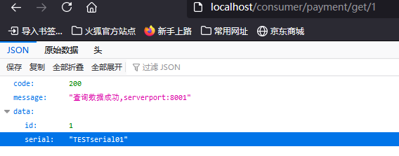

Eureka是一种服务注册中心
Spirng Cloud Eureka使用Netflix Eureka来实现服务注册与发现。它既包含了服务端组件，也包含了客户端组件，并且服务端与客户端均采用java编写，所以Eureka主要适用于通过java实现的分布式系统，或是JVM兼容语言构建的系统。Eureka的服务端提供了较为完善的REST API，所以Eureka也支持将非java语言实现的服务纳入到Eureka服务治理体系中来，只需要其他语言平台自己实现Eureka的客户端程序。目前.Net平台的Steeltoe、Node.js的eureka-js-client等都已经实现了各自平台的Ereka客户端组件。
打个比方，就好像是医院的分诊台，我们到医院看病，就找这个分诊台，然后调用对应的服务。
eureka 有两个组件
- eureka server
- eureka client
eureka的作用？
提供接口地址
服务保持到eureka的心跳链接 如果30s没有连接到，就把服务T出去

eureka 应该有集群 因为集群才能高可用，试想如果eureka注册中心是单实例的
那么服务挂了 后果很严重
为了提高可用性，应该将eureka变成高可用集群，就像上面图中Eureka是多个堆叠一样
集群的功能应该是：互相注册，相互守望
配置Eureka集群：
依然是5个步骤，
- 建MODE
- 改POM
- 改yml
- 主启动
- 业务类（对于注册中心不需要）
POM：
1 | <!--20210802更新：eureka-client--> |
yml：
1 | server: |
建两个项目，一个7001，一个7002，他们相互注册对面的地址（在eureka.client.service-url.defaultZone里面填写对方的地址）

然后编写主启动类
1 |
|
只有最上面的注解@EnableEurekaServer不一样，其他都是默认
配置服务提供者
把单服务提供者改成多个服务提供者，有利于将来分布式服务，均衡负载。
具体的改法就基本是直接把单机时候的provider拷贝一份，但是服务器占用不同的端口（8001、8002）
改POM：
1 | <!--20210802更新：eureka-client--> |
改yml：
1 | eureka: |
主启动：
1 |
|
@EnableEurekaClient这里要注意
配置消费者
基本的POM、YML和生产者类似
然后在客户端对应的配置yml等：
1 | eureka: |
1 |
|

开启负载均衡：新建一个ApplicationContextConfig
1 |
|
这一步等于在容器里面配置了一个bean，在RestTemplate上面加一个@LoadBalanced实现负载均衡，从而，我们再地址栏访问http://localhost/consumer/payment/get/1 就可以均衡负载地访问不同服务提供地址（默认是轮询）

再访问一次，就变成serverport:8002
注意：
- http://eureka7001.com:7001/eureka 使用之前需要在HOSTS里面添加
127.0.0.1 eureka7001.com - 地址默认是服务的名称
- 服务的消费者，配置80端口，这个端口是对外的，因此只用提供一个
- 服务的提供者，可以配置多个，这样的话好处不少